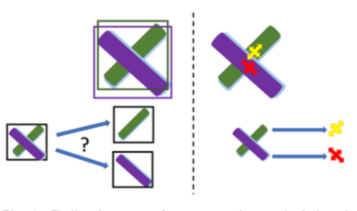

|
GRAC: Self-Guided and Self-Regularized Actor-Critic |
|
Generative 3D Part Assembly via Dynamic Graph Learning |
|
Concept2Robot: Learning Manipulation Concepts from Instructions and Human Demonstrations |
|
Learning 3D Part Assembly from a Single Image |
|
Design and Control of Roller Grasper V2 for In-Hand Manipulation |
|
Learning to Scaffold the Development of Robotic Manipulation Skills |
|
UniGrasp: Learning a Unified Model to Grasp with Multifingered Robotic Hands |
 |
ClusterNet: 3D Instance Segmentation based on RGB-D Images |
|
Motion-based Object Segmentation
based on Dense RGB-D Scene Flow |
|
Cross-modal Attribute Transfer for Rescaling 3D Models |